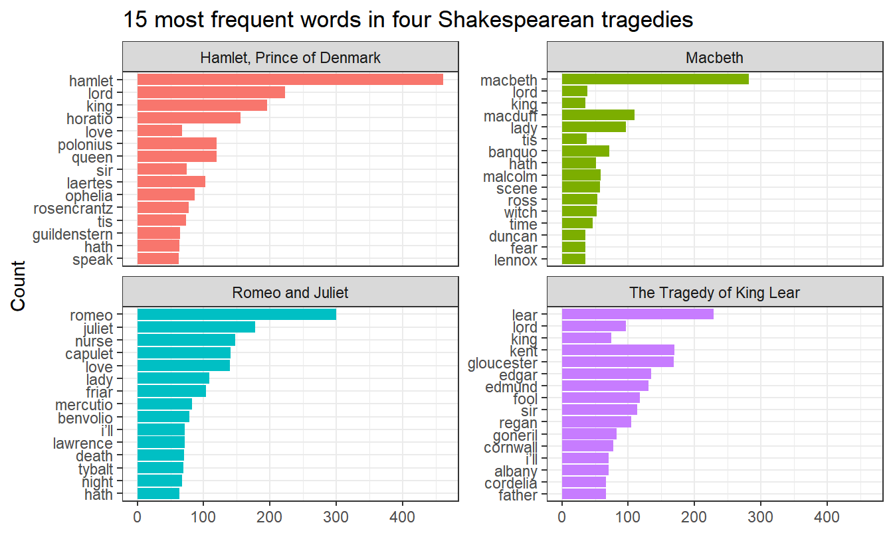
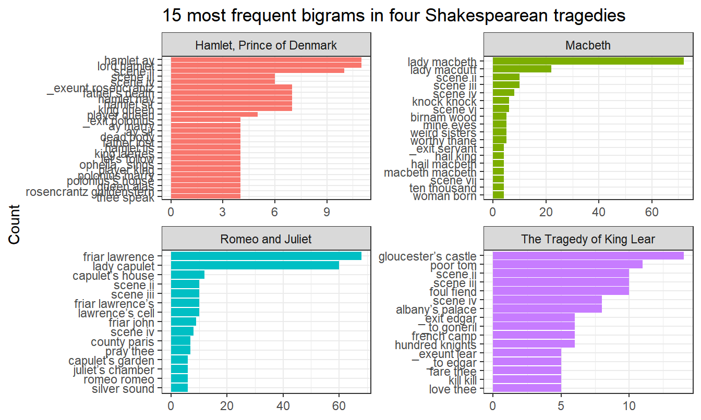
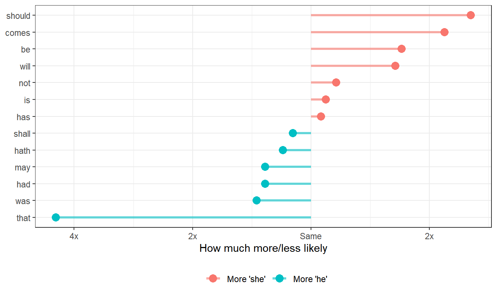
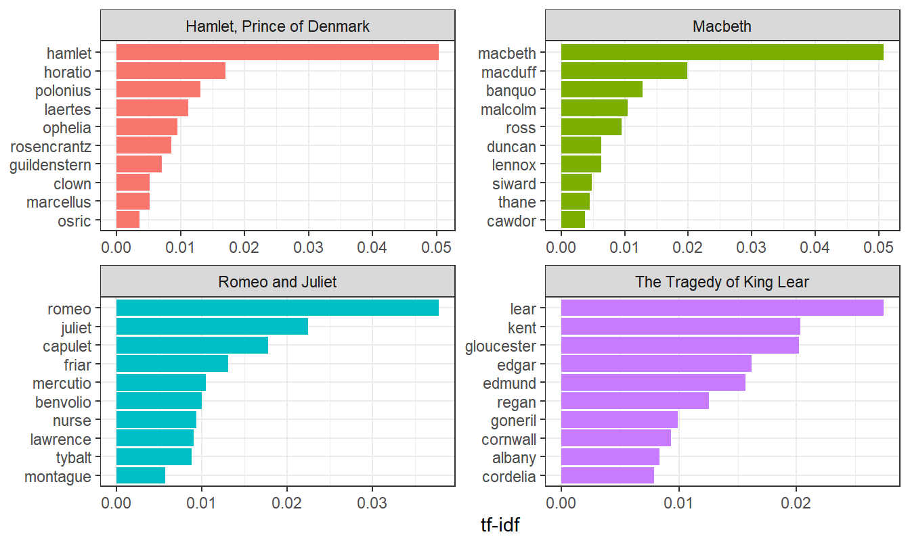
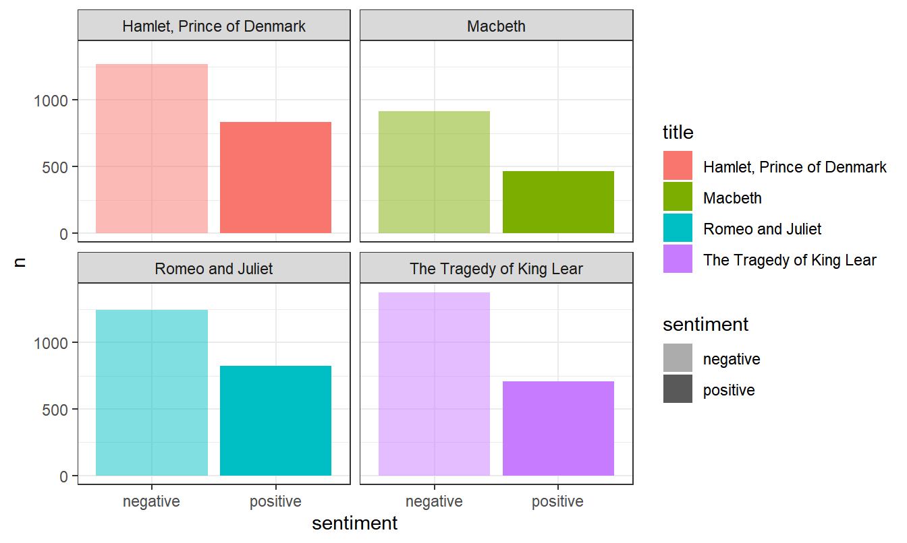
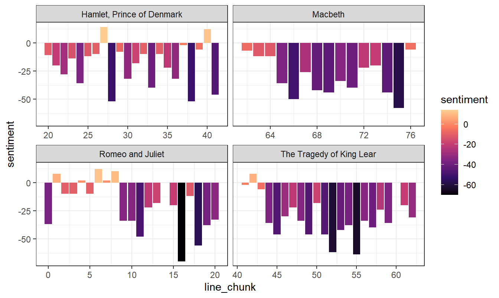
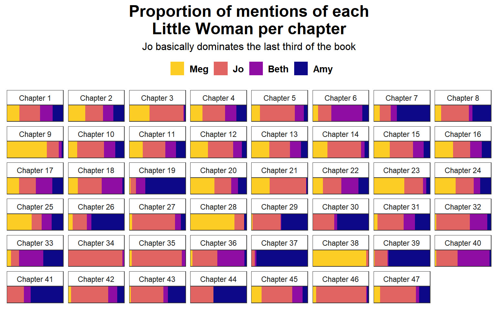

Code
library(tidyverse) # For ggplot, dplyr, etc.
library(tidytext) # For neat text things
library(gutenbergr) # For downloading books from Project GutenbergExample for Monday, December 2, 2024–Friday, December 6, 2024
For this example, we’re going to use the text of Little Women by Louisa May Alcott and four Shakespearean tragedies (Romeo and Juliet, King Lear, Macbeth, and Hamlet) to explore how to do some basic text visualization.
You can follow along if you want, but don’t feel like you have too. This is mostly just to give you a taste of different methods for visualizing text. It’s by no means comprehensive, but it is well annotated and commented and should (hopefully) be easy to follow.
If you want to play with part-of-speech tagging, you can download an already-tagged version of Little Women here (you’ll likely need to right click and choose “Save Link As…”):
If you want to see other examples of text visualizations with the {tidytext} package, check out some of these:
This is a highly cleaned up version of the code from the video.
First, as always, we’ll load the libraries we’ll be using:
We’re going to use the {gutenbergr} package to download some books directly from Project Gutenberg. The IDs for these books come from the URLs at their website. For instance, Little Women is book #514. We’ll store these books as *_raw and then clean them up later.
Sometimes the Project Gutenberg server gets too much traffic and goes down temporarily (it’s all run by volunteers!) and you’ll get an error like this:
Project Gutenberg has multiple copies of itself on different servers around the world, called “mirrors.” You can see the full list of mirrors here. If you get an error about connecting to the main Project Gutenberg server (aleph.gutenberg.org), you can specify a different mirror with the mirror argument in gutenberg_download():
If you won’t want to redownload the books every time you knit (you don’t), you can do the same trick we’ve used for WDI and FRED data. Put the actual code for getting the books in a chunk with eval=FALSE on it and run it manually in RStudio when you want to get the data. Then you can write the downloaded data as a CSV file, and then load it invisibly from the CSV file when you knit:
The data you get from Project Gutenberg comes in a tidy format, with a column for the book id, a column for the title, and a column for text. Sometimes this text column will be divided by lines in the book; sometimes it might be an entire page or paragraph or chapter. It all depends on how the book is formatted at Project Gutenberg.
Here’s what the start of our little_women_raw data looks like:
If we look at the data in RStudio, we can see that the actual book doesn’t start until row 70 (the first 69 rows are the table of contents and other parts of the front matter).
In this case, Little Women starts at row 67. That will not be true for all books! Every book is unique and has different amounts of front matter. You cannot assume that any book you work with starts at line 67.
It would be nice if we had a column that indicated what chapter each line is in, since we could then group by chapter and look at patterns within chapters. Since the data doesn’t come with a chapter column, we have to make one ourselves using a fun little trick. Each chapter in the book starts with “CHAPTER ONE” or “CHAPTER TWO”, with “chapter” in ALL CAPS. We can make a variable named chapter_start that will be true if a line starts with “CHAPTER” and false if not. Then we can use the cumsum() function to take the cumulative sum of this column, which will increment up one number ever time there’s a new chapter, thus creating a helpful chapter column.
# Clean up Little Women
little_women <- little_women_raw %>%
# The actual book doesn't start until line 67
slice(67:n()) %>%
# Get rid of rows where text is missing
drop_na(text) %>%
# Chapters start with CHAPTER X, so mark if each row is a chapter start
# cumsum() calculates the cumulative sum, so it'll increase every time there's
# a new chapter and automatically make chapter numbers
mutate(chapter_start = str_detect(text, "^CHAPTER"),
chapter_number = cumsum(chapter_start)) %>%
# Get rid of these columns
select(-gutenberg_id, -title, -chapter_start)
head(little_women)
## # A tibble: 6 × 2
## text chapter_number
## <chr> <int>
## 1 "CHAPTER ONE" 1
## 2 "PLAYING PILGRIMS" 1
## 3 "" 1
## 4 "" 1
## 5 "“Christmas won’t be Christmas without any presents,” grumbled Jo, lying" 1
## 6 "on the rug." 1The data from Shakespeare is similarly messy, with just three columns:
head(tragedies_raw)
## # A tibble: 6 × 3
## gutenberg_id text title
## <int> <chr> <chr>
## 1 1513 "THE TRAGEDY OF ROMEO AND JULIET" Romeo and Juliet
## 2 1513 "" Romeo and Juliet
## 3 1513 "" Romeo and Juliet
## 4 1513 "" Romeo and Juliet
## 5 1513 "by William Shakespeare" Romeo and Juliet
## 6 1513 "" Romeo and JulietThe initial text sometimes isn’t the actual text of the book. If you look at the beginning of Hamlet, for instance, there’s a bunch of introductory stuff from editors and transcribers. In real life, we’d want to find a systematic way to get rid of that (perhaps by looking at how many introductory rows there are in each of the four plays and removing those rows), but for now, we’ll just live with it and pretend Shakespeare wrote these notes. 🤷
We could also figure out a systematic way to indicate acts and scenes, but that’s tricky, so we won’t for this example. (This guy did though!)
Now that we have tidy text data, let’s do stuff with it!
One way we can visualize text is to look at word frequencies and find the most common words. This is even more important when looking across documents.
Right now the text we have is tidy, but it is based on lines of text, not words. In order to count words correctly, we need each token (or text element, whether it be a word or bigram or paragraph or whatever) to be in its own row. The unnest_tokens() functions from {tidytext} does this for us. The first argument is the name of the column we want to create; the second argument is the name of the column we want to split into tokens.
Let’s just work with the Shakespeare tragedies:
tragedies_words <- tragedies_raw %>%
drop_na(text) %>%
unnest_tokens(word, text)
head(tragedies_words)
## # A tibble: 6 × 3
## gutenberg_id title word
## <int> <chr> <chr>
## 1 1513 Romeo and Juliet the
## 2 1513 Romeo and Juliet tragedy
## 3 1513 Romeo and Juliet of
## 4 1513 Romeo and Juliet romeo
## 5 1513 Romeo and Juliet and
## 6 1513 Romeo and Juliet julietNow that we have words, we can filter and count the words. Here’s what’s happening in this next chunk:
anti_join() to remove all common stop words like “a” and “the” that are listed in the stop_words dataset that is loaded when you load {tidytext}top_words_tragedies <- tragedies_words %>%
# Remove stop words
anti_join(stop_words) %>%
# Get rid of old timey words and stage directions
filter(!(word %in% c("thou", "thy", "haue", "thee",
"thine", "enter", "exeunt", "exit"))) %>%
# Count all the words in each play
count(title, word, sort = TRUE) %>%
# Keep top 15 in each play
group_by(title) %>%
top_n(15) %>%
ungroup() %>%
# Make the words an ordered factor so they plot in order
mutate(word = fct_inorder(word))
top_words_tragedies
## # A tibble: 62 × 3
## title word n
## <chr> <fct> <int>
## 1 Hamlet, Prince of Denmark hamlet 461
## 2 Romeo and Juliet romeo 300
## 3 Macbeth macbeth 282
## 4 The Tragedy of King Lear lear 229
## 5 Hamlet, Prince of Denmark lord 223
## 6 Hamlet, Prince of Denmark king 196
## 7 Romeo and Juliet juliet 178
## 8 The Tragedy of King Lear kent 170
## 9 The Tragedy of King Lear gloucester 169
## 10 Hamlet, Prince of Denmark horatio 156
## # ℹ 52 more rowsNow we can plot these results, facetting and filling by title:

These results aren’t terribly surprising. “lear” is the most common word in King Lear, “macbeth” is the most common word in Macbeth, and so on. But the results are still really neat! This is a wordcloud for grownups!
(Sharp-eyed readers will notice that the words aren’t actually in perfect order! That’s because some common words are repeated across the plays, like “lord” and “sir”. However, each category in a factor can only have one possible position in the orer, so because “lord” is the second most common word in Hamlet it also appears as #2 in Macbeth and King Lear. You can fix this with the reorder_within() function in {tidytext}—see Julia Silge’s tutorial here for how to use it.)
We can also look at pairs of words instead of single words. To do this, we need to change a couple arguments in unnest_tokens(), but otherwise everything else stays the same. In order to remove stopwords, we need to split the bigram column into two columns (word1 and word2) with separate(), filter each of those columns, and then combine the word columns back together as bigram with unite()
tragedies_bigrams <- tragedies_raw %>%
drop_na(text) %>%
# n = 2 here means bigrams. We could also make trigrams (n = 3) or any type of n-gram
unnest_tokens(bigram, text, token = "ngrams", n = 2) %>%
# Get rid of NAs in the new bigram column
drop_na(bigram) %>%
# Split the bigrams into two words so we can remove stopwords
separate(bigram, c("word1", "word2"), sep = " ") %>%
filter(!word1 %in% stop_words$word,
!word2 %in% stop_words$word) %>%
filter(!word1 %in% c("thou", "thy", "thine", "enter", "exeunt", "exit"),
!word2 %in% c("thou", "thy", "thine", "enter", "exeunt", "exit")) %>%
# Put the two word columns back together
unite(bigram, word1, word2, sep = " ")
tragedies_bigrams
## # A tibble: 10,829 × 3
## gutenberg_id title bigram
## <int> <chr> <chr>
## 1 1513 Romeo and Juliet william shakespeare
## 2 1513 Romeo and Juliet scene ii
## 3 1513 Romeo and Juliet scene iii
## 4 1513 Romeo and Juliet capulet’s house
## 5 1513 Romeo and Juliet scene iv
## 6 1513 Romeo and Juliet capulet’s house
## 7 1513 Romeo and Juliet act ii
## 8 1513 Romeo and Juliet adjoining capulet’s
## 9 1513 Romeo and Juliet capulet’s garden
## 10 1513 Romeo and Juliet scene ii
## # ℹ 10,819 more rows
top_bigrams <- tragedies_bigrams %>%
# Count all the bigrams in each play
count(title, bigram, sort = TRUE) %>%
# Keep top 15 in each play
group_by(title) %>%
top_n(15) %>%
ungroup() %>%
# Make the bigrams an ordered factor so they plot in order
mutate(bigram = fct_inorder(bigram))
## Selecting by n
ggplot(top_bigrams, aes(y = fct_rev(bigram), x = n, fill = title)) +
geom_col() +
guides(fill = "none") +
labs(y = "Count", x = NULL,
title = "15 most frequent bigrams in four Shakespearean tragedies") +
facet_wrap(vars(title), scales = "free") +
theme_bw()
There are some neat trends here. “Lord Hamlet” is the most common pair of words in Hamlet (not surprisingly), but in Macbeth the repeated “knock knock” (the first non-name repeated pair) is a well-known plot point and reoccurring symbolic theme throughout the play.
We can replicate the “She Giggles, He Gallops” idea by counting the bigrams that match “he X” and “she X”.
The log ratio idea shows how much more likely a word is compared to its counterpart (so “he that” is about 5 more likely to appear than “she that”. In this graph, I replaced the x-axis labels with “2x” and “4x”, but without those, you get numbers like 1, 2, and 3 (or -1, -2, -3)). To convert those logged ratio numbers into the multiplicative version (i.e. 2x instead of 1), raise 2 to the power of the log ratio. If the log ratio is 3, the human-readable version is \(2^3\), or 8 times.
The only text wizardry here is tokenizing the words. Pretty much the rest of all this code is just {dplyr} mutating, filtering, and counting:
pronouns <- c("he", "she")
bigram_he_she_counts <- tragedies_raw %>%
drop_na(text) %>%
# Split into bigrams
unnest_tokens(bigram, text, token = "ngrams", n = 2) %>%
# Find counts of bigrams
count(bigram, sort = TRUE) %>%
# Split the bigram column into two columns
separate(bigram, c("word1", "word2"), sep = " ") %>%
# Only choose rows where the first word is he or she
filter(word1 %in% pronouns) %>%
count(word1, word2, wt = n, sort = TRUE) %>%
rename(total = n)
word_ratios <- bigram_he_she_counts %>%
# Look at each of the second words
group_by(word2) %>%
# Only choose rows where the second word appears more than 10 times
filter(sum(total) > 10) %>%
ungroup() %>%
# Spread out the word1 column so that there's a column named "he" and one named "she"
spread(word1, total, fill = 0) %>%
# Add 1 to each number so that logs work (just in case any are zero)
mutate_if(is.numeric, ~(. + 1) / sum(. + 1)) %>%
# Create a new column that is the logged ratio of the she counts to he counts
mutate(logratio = log2(she / he)) %>%
# Sort by that ratio
arrange(desc(logratio))
# Rearrange this data so it's plottable
plot_word_ratios <- word_ratios %>%
# This gets the words in the right order---we take the absolute value, select
# only rows where the log ratio is bigger than 0, and then take the top 15 words
mutate(abslogratio = abs(logratio)) %>%
group_by(logratio < 0) %>%
top_n(15, abslogratio) %>%
ungroup() %>%
mutate(word = reorder(word2, logratio))
# Finally we plot this
ggplot(plot_word_ratios, aes(y = word, x = logratio, color = logratio < 0)) +
geom_segment(aes(y = word, yend = word,
x = 0, xend = logratio),
linewidth = 1.1, alpha = 0.6) +
geom_point(size = 3.5) +
labs(x = "How much more/less likely", y = NULL) +
scale_color_discrete(name = "", labels = c("More 'she'", "More 'he'")) +
scale_x_continuous(breaks = seq(-3, 3),
labels = c("8x", "4x", "2x",
"Same", "2x", "4x", "8x")) +
theme_bw() +
theme(legend.position = "bottom")
Shakespeare doesn’t use a lot of fancy verbs in his plays, so we’re left with incredibly common verbs like “should” and “comes” and “was”. Oh well.
We can determine which words are the most unique for each book/document in our corpus using by calculating the tf-idf (term frequency-inverse document frequency) score for each term. The tf-idf is the product of the term frequency and the inverse document frequency:
\[ \begin{aligned} \operatorname{tf}(\text{term}) &= \frac{n_{\text{term}}}{n_{\text{terms in document}}} \\ \operatorname{idf}(\text{term}) &= \ln{\left(\frac{n_{\text{documents}}}{n_{\text{documents containing term}}}\right)} \\ \operatorname{tf-idf}(\text{term}) &= \operatorname{tf}(\text{term}) \times \operatorname{idf}(\text{term}) \end{aligned} \]
Fortunately you don’t need to remember that formula. The bind_tf_idf() function will calculate this for you. Remember, the higher the tf-idf number, the more unique the term is in the document, but these numbers are meaningless and unitless—you can’t convert them to a percentage or anything.
Here are the most unique words in these four tragedies, compared to all the tragedies:
tragedy_words <- tragedies_raw %>%
drop_na() %>%
# Split into word tokens
unnest_tokens(word, text) %>%
# Remove stop words and old timey words
anti_join(stop_words) %>%
filter(!word %in% c("thou", "thy", "haue", "thee",
"thine", "enter", "exeunt", "exit")) %>%
count(title, word, sort = TRUE)
# Add the tf-idf values to the counts
tragedy_tf_idf <- tragedy_words %>%
bind_tf_idf(word, title, n)
# Get the top 10 uniquest words
tragedy_tf_idf_plot <- tragedy_tf_idf %>%
arrange(desc(tf_idf)) %>%
group_by(title) %>%
top_n(10) %>%
ungroup() %>%
mutate(word = fct_inorder(word))
ggplot(tragedy_tf_idf_plot,
aes(y = fct_rev(word), x = tf_idf, fill = title)) +
geom_col() +
guides(fill = "none") +
labs(x = "tf-idf", y = NULL) +
facet_wrap(~ title, scales = "free") +
theme_bw()
Not surprisingly, the most unique words for each play happen to be the names of the characters in those plays.
In the video, I plotted the sentiment of Little Women across the book, but it wasn’t a very interesting plot. We’ll try with Shakespeare here instead.
At its core, sentiment analysis involves looking at a big list of words for how negative or positive they are. Some sentiment dictionaries mark if a word is “negative” or “positive”; some give words a score from -3 to 3; some give different emotions like “sadness” or “anger”. You can see what the different dictionaries look like with get_sentiments()
get_sentiments("afinn") # Scoring system
## # A tibble: 2,477 × 2
## word value
## <chr> <dbl>
## 1 abandon -2
## 2 abandoned -2
## 3 abandons -2
## 4 abducted -2
## 5 abduction -2
## 6 abductions -2
## 7 abhor -3
## 8 abhorred -3
## 9 abhorrent -3
## 10 abhors -3
## # ℹ 2,467 more rows
# get_sentiments("bing") # Negative/positive
# get_sentiments("nrc") # Specific emotions
# get_sentiments("loughran") # Designed for financial statements; positive/negativeHere we split the Shakespearean tragedies into words, join a sentiment dictionary to it, and use {dplyr} data wrangling to calculate the net number positive words in each chapter. Had we used the AFINN library, we could calculate the average sentiment per chapter, since AFINN uses a scoring system instead of negative/positive labels. Or we could’ve used the NRC library, which has specific emotions like trust and fear.
tragedy_words <- tragedies_raw %>%
drop_na() %>%
# Split into word tokens
unnest_tokens(word, text) %>%
# Remove stop words and old timey words
anti_join(stop_words) %>%
filter(!word %in% c("thou", "thy", "haue", "thee",
"thine", "enter", "exeunt", "exit"))
# Join the sentiment dictionary
tragedy_sentiment <- tragedy_words %>%
inner_join(get_sentiments("bing"), relationship = "many-to-many")
tragedy_sentiment
## # A tibble: 7,637 × 4
## gutenberg_id title word sentiment
## <int> <chr> <chr> <chr>
## 1 1513 Romeo and Juliet tragedy negative
## 2 1513 Romeo and Juliet dignity positive
## 3 1513 Romeo and Juliet fair positive
## 4 1513 Romeo and Juliet grudge negative
## 5 1513 Romeo and Juliet break negative
## 6 1513 Romeo and Juliet unclean negative
## 7 1513 Romeo and Juliet fatal negative
## 8 1513 Romeo and Juliet overthrows negative
## 9 1513 Romeo and Juliet death negative
## 10 1513 Romeo and Juliet strife negative
## # ℹ 7,627 more rowsWe can look at these sentiments a few different ways. First we can get a count of total positive and negative words in the four books. We can see that in all four, there are more negative words than positive ones (they’re tragdies, after all):

Perhaps more usefully, we can divide each of the plays into groups of 100 lines, and then get the net sentiment of each group (number of positive words − number of negative words). By splitting the data into groups of lines, we can show a more granular view of the progression of the plot. To do this we make a column that indicates the row number, and then we use the special %/% operator to perform integer division, which essentially lops off the decimal point when dividing numbers: 150/100 normally is 1.5, but in integer divison, it is 1. This is a helpful trick for putting rows 1-99 in one group, then rows 100-199 in another group, etc.
tragedies_split_into_lines <- tragedy_sentiment %>%
# Divide lines into groups of 100
mutate(line = row_number(),
line_chunk = line %/% 100) %>%
# Get a count of postiive and negative words in each 100-line chunk in each play
count(title, line_chunk, sentiment) %>%
# Convert the sentiment column into two columns named "positive" and "negative"
pivot_wider(names_from = sentiment, values_from = n) %>%
# Calculate net sentiment
mutate(sentiment = positive - negative)
ggplot(tragedies_split_into_lines,
aes(x = line_chunk, y = sentiment, fill = sentiment)) +
geom_col() +
scale_fill_viridis_c(option = "magma", end = 0.9) +
facet_wrap(vars(title), scales = "free_x") +
theme_bw()
Neat. They’re all really sad and negative, except for the beginning of Romeo and Juliet where the two lovers meet and fall in love. Then everyone dies later.
None of this stuff was in the video, but it’s useful to know and see how to do it. It all generally comes from the Tidy Text Mining book by Julia Silge and David Robinson
R has no way of knowing if words are nouns, verbs, or adjectives. You can algorithmically predict what part of speech each word is using a part-of-speech tagger, like spaCy or Stanford’s Natural Langauge Processing (NLP) library.
These are external programs that are not written in R and don’t naturally communicate with R (spaCy is written in Python; Stanford’s CoreNLP is written in Java). There is a helpful R package named {cleanNLP} that helps you interact with these programs from within R, whis is super helpful. {cleanNLP} also comes with its own R-only tagger so you don’t need to install anything with Python or Java (however, it’s not as powerful as either spaCy, which is faster, and doesn’t deal with foreign languages like Arabic and Chinese like Stanford’s NLP library).
You can see other examples of part-of-speech tagging (along with instructions for how to install spaCy and coreNLP) here:
Here’s the general process for tagging (or “annotating”) text with the {cleanNLP} package:
Make a dataset where one column is the id (line number, chapter number, book+chapter, etc.), and another column is the text itself.
Initialize the NLP tagger. You can use any of these:
cnlp_init_udpipe(): Use an R-only tagger that should work without installing anything extra (a little slower than the others, but requires no extra steps!)cnlp_init_spacy(): Use spaCy (if you’ve installed it on your computer with Python)cnlp_init_corenlp(): Use Stanford’s NLP library (if you’ve installed it on your computer with Java)Feed the data frame from step 1 into the cnlp_annotate() function and wait.
Save the tagged data on your computer so you don’t have to re-tag it every time.
Here’s an example using the Little Women data:
# For the tagger to work, each row needs to be unique, which means we need to
# combine all the text into individual chapter-based rows. This takes a little
# bit of text-wrangling with dplyr:
little_women_to_tag <- little_women %>%
# Group by chapter number
group_by(chapter_number) %>%
# Take all the rows in each chapter and collapse them into a single cell
nest(data = c(text)) %>%
ungroup() %>%
# Look at each individual cell full of text lines and paste them together into
# one really long string of text per chapter
mutate(text = map_chr(data, ~paste(.$text, collapse = " "))) %>%
# Get rid of this column
select(-data)
little_women_to_tag
## # A tibble: 47 × 2
## chapter_number text
## <int> <chr>
## 1 1 "CHAPTER ONE PLAYING PILGRIMS “Christmas won’t be Christmas without any presents,” grumbled Jo, lying on the rug. “It’s so dread…
## 2 2 "CHAPTER TWO A MERRY CHRISTMAS Jo was the first to wake in the gray dawn of Christmas morning. No stockings hung at the fireplace…
## 3 3 "CHAPTER THREE THE LAURENCE BOY “Jo! Jo! Where are you?” cried Meg at the foot of the garret stairs. “Here!” answered a husky vo…
## 4 4 "CHAPTER FOUR BURDENS “Oh, dear, how hard it does seem to take up our packs and go on,” sighed Meg the morning after the party, f…
## 5 5 "CHAPTER FIVE BEING NEIGHBORLY “What in the world are you going to do now, Jo?” asked Meg one snowy afternoon, as her sister came…
## 6 6 "CHAPTER SIX BETH FINDS THE PALACE BEAUTIFUL The big house did prove a Palace Beautiful, though it took some time for all to get …
## 7 7 "CHAPTER SEVEN AMY’S VALLEY OF HUMILIATION “That boy is a perfect cyclops, isn’t he?” said Amy one day, as Laurie clattered by on…
## 8 8 "CHAPTER EIGHT JO MEETS APOLLYON “Girls, where are you going?” asked Amy, coming into their room one Saturday afternoon, and find…
## 9 9 "CHAPTER NINE MEG GOES TO VANITY FAIR “I do think it was the most fortunate thing in the world that those children should have th…
## 10 10 "CHAPTER TEN THE P.C. AND P.O. As spring came on, a new set of amusements became the fashion, and the lengthening days gave long …
## # ℹ 37 more rowsNotice how there’s now a row for each chapter, and the whole chapter is contained in the text column. With the data in this format, we can annotate it. It takes 75 seconds to run this on my 2021 MacBook Pro with the R-only udpipe tagger (and only 30 seconds if I use the spaCy tagger). Notice how I immediately save the tagged tokens as a CSV file after so I don’t have to do it again.
library(cleanNLP)
# Use the built-in R-based tagger
cnlp_init_udpipe()
little_women_tagged_raw <- cnlp_annotate(little_women_to_tag,
text_name = "text",
doc_name = "chapter_number")
# Save the tagged token dataframe so we don't have to run this again
write_csv(little_women_tagged_raw$token, "data/little_women_tagged.csv")
# Load the tagged tokens
little_women_tagged <- read_csv("data/little_women_tagged.csv")Here’s what the tagged text looks like:
little_women_tagged
## # A tibble: 231,564 × 10
## doc_id sid tid token token_with_ws lemma upos xpos tid_source relation
## <int> <int> <int> <chr> <chr> <chr> <chr> <chr> <int> <chr>
## 1 1 1 1 "CHAPTER" "CHAPTER " "chapter" NOUN NN 4 nmod
## 2 1 1 2 "ONE" "ONE " "one" NUM CD 1 nummod
## 3 1 1 3 "PLAYING" "PLAYING " "playing" NOUN NN 4 compound
## 4 1 1 4 "PILGRIMS" "PILGRIMS " "PILGRIMS" PROPN NNP 10 npadvmod
## 5 1 1 5 " " " " " " SPACE _SP 4 dep
## 6 1 1 6 "“" "“" "\"" PUNCT `` 10 punct
## 7 1 1 7 "Christmas" "Christmas " "Christmas" PROPN NNP 10 nsubj
## 8 1 1 8 "wo" "wo" "will" AUX MD 10 aux
## 9 1 1 9 "n’t" "n’t " "not" PART RB 10 neg
## 10 1 1 10 "be" "be " "be" AUX VB 17 ccomp
## # ℹ 231,554 more rowsThere are a bunch of new columns like lemma (or the base stemmed word), and upos and pos for the different parts of speech. These use the Penn Treebank codes.
Now that everything is tagged, we can do any grouping and summarizing and filtering we want. We could find the most common verbs, or the most common nouns or proper names, for instance. Here’s a fun plot that shows the proportion of mentions of the four main characters (Meg, Jo, Beth, and Amy) in each chapter.
# Find all proper nouns
proper_nouns <- little_women_tagged %>%
filter(upos == "PROPN")
main_characters_by_chapter <- proper_nouns %>%
# Find only Meg, Jo, Beth, and Amy
filter(lemma %in% c("Meg", "Jo", "Beth", "Amy")) %>%
# Group by chapter and character name
group_by(doc_id, lemma) %>%
# Get the count of mentions
summarize(n = n()) %>%
# Make a new column named "name" that is an ordered factor of the girls' names
mutate(name = factor(lemma, levels = c("Meg", "Jo", "Beth", "Amy"), ordered = TRUE)) %>%
# Rename this so it's called chapter
rename(chapter = doc_id) %>%
# Group by chapter
group_by(chapter) %>%
# Calculate the proportion of each girl's mentions in each chapter
mutate(prop = n / sum(n)) %>%
ungroup() %>%
# Make a cleaner chapter name column
mutate(chapter_name = paste("Chapter", chapter)) %>%
mutate(chapter_name = fct_inorder(chapter_name))
main_characters_by_chapter
## # A tibble: 177 × 6
## chapter lemma n name prop chapter_name
## <int> <chr> <int> <ord> <dbl> <fct>
## 1 1 Amy 22 Amy 0.188 Chapter 1
## 2 1 Beth 26 Beth 0.222 Chapter 1
## 3 1 Jo 43 Jo 0.368 Chapter 1
## 4 1 Meg 26 Meg 0.222 Chapter 1
## 5 2 Amy 13 Amy 0.197 Chapter 2
## 6 2 Beth 12 Beth 0.182 Chapter 2
## 7 2 Jo 21 Jo 0.318 Chapter 2
## 8 2 Meg 20 Meg 0.303 Chapter 2
## 9 3 Amy 2 Amy 0.02 Chapter 3
## 10 3 Beth 2 Beth 0.02 Chapter 3
## # ℹ 167 more rowsAnd here’s the polished plot:
ggplot(main_characters_by_chapter, aes(x = prop, y = "1", fill = fct_rev(name))) +
geom_col(position = position_stack()) +
scale_x_continuous(expand = c(0, 0)) +
scale_y_discrete(expand = c(0, 0)) +
scale_fill_viridis_d(option = "plasma", end = 0.9, name = NULL) +
guides(fill = guide_legend(reverse = TRUE)) +
labs(x = NULL, y = NULL,
title = "Proportion of mentions of each\nLittle Woman per chapter",
subtitle = "Jo basically dominates the last third of the book") +
facet_wrap(vars(chapter_name), nrow = 6) +
theme_bw(base_family = "Roboto Condensed") +
theme(legend.position = "top",
axis.text = element_blank(),
axis.ticks = element_blank(),
strip.background = element_rect(fill = "white"),
legend.text = element_text(face = "bold", size = rel(1)),
plot.title = element_text(face = "bold", hjust = 0.5, size = rel(1.7)),
plot.subtitle = element_text(hjust = 0.5, size = rel(1.1)))
## Warning in grid.Call(C_stringMetric, as.graphicsAnnot(x$label)): font family not found in Windows font database
## Warning in grid.Call(C_stringMetric, as.graphicsAnnot(x$label)): font family not found in Windows font database
## Warning in grid.Call(C_textBounds, as.graphicsAnnot(x$label), x$x, x$y, : font family not found in Windows font database
## Warning in grid.Call(C_stringMetric, as.graphicsAnnot(x$label)): font family not found in Windows font database
## Warning in grid.Call(C_stringMetric, as.graphicsAnnot(x$label)): font family not found in Windows font database
## Warning in grid.Call(C_textBounds, as.graphicsAnnot(x$label), x$x, x$y, : font family not found in Windows font database
## Warning in grid.Call(C_textBounds, as.graphicsAnnot(x$label), x$x, x$y, : font family not found in Windows font database
## Warning in grid.Call(C_textBounds, as.graphicsAnnot(x$label), x$x, x$y, : font family not found in Windows font database
## Warning in grid.Call(C_textBounds, as.graphicsAnnot(x$label), x$x, x$y, : font family not found in Windows font database
## Warning in grid.Call.graphics(C_text, as.graphicsAnnot(x$label), x$x, x$y, : font family not found in Windows font database
## Warning in grid.Call(C_textBounds, as.graphicsAnnot(x$label), x$x, x$y, : font family not found in Windows font database
## Warning in grid.Call(C_textBounds, as.graphicsAnnot(x$label), x$x, x$y, : font family not found in Windows font database
## Warning in grid.Call(C_textBounds, as.graphicsAnnot(x$label), x$x, x$y, : font family not found in Windows font database
If you want to see some examples of topic modeling with Latent Dirichlet Allocation (LDA) or text fingerprinting based on sentence length and counts of hapax legomena (based on this article), see these examples from a previous version of this class: topic modeling and fingerprinting.
Finally, you can use the {textfeatures} package to find all sorts of interesting numeric statistics about text, like the number of exclamation points, commas, digits, characters per word, uppercase letters, lowercase letters, and more!
---
title: "Text"
date: "2024-12-02"
date_end: "2024-12-06"
---
```{r load-targets, include=FALSE}
withr::with_dir(here::here(), {
little_women_path <- targets::tar_read(data_little_women_tagged)
little_women_tagged <- targets::tar_read(little_women_tagged)$spacy$token
})
```
For this example, we're going to use the text of *Little Women* by Louisa May Alcott and four Shakespearean tragedies (*Romeo and Juliet*, *King Lear*, *Macbeth*, and *Hamlet*) to explore how to do some basic text visualization.
You can follow along if you want, but **don't feel like you have too**. This is mostly just to give you a taste of different methods for visualizing text. It's by no means comprehensive, but it is well annotated and commented and should (hopefully) be easy to follow.
If you want to play with part-of-speech tagging, you can download an already-tagged version of *Little Women* here (you'll likely need to right click and choose "Save Link As…"):
- [{{< fa file-csv >}} `little_women_tagged.csv`](/`r little_women_path`)
If you want to see other examples of text visualizations with the {tidytext} package, check out some of these:
- {{< fa arrow-up-right-from-square >}} [Harry Potter Sentiment Analysis for Beginners](https://rstudio-pubs-static.s3.amazonaws.com/300624_8260952d1f0346969e65f41a97006bf5.html) (this uses [the {harrypotter} package](https://github.com/bradleyboehmke/harrypotter), which you can install from GitHub (not from CRAN))
- {{< fa arrow-up-right-from-square >}} Peer Christensen ["Fair is foul, and foul is fair: a tidytext sentiment analysis of Shakespeare’s tragedies"](https://peerchristensen.netlify.app/post/fair-is-foul-and-foul-is-fair-a-tidytext-entiment-analysis-of-shakespeare-s-tragedies/)
- {{< fa arrow-up-right-from-square >}} ["Tidy text, parts of speech, and unique words in the Bible"](https://www.andrewheiss.com/blog/2018/12/26/tidytext-pos-john/)
- {{< fa arrow-up-right-from-square >}} ["Tidy text, parts of speech, and unique words in the Qur'an"](https://www.andrewheiss.com/blog/2018/12/28/tidytext-pos-arabic/)
## Live coding example
<div class="ratio ratio-16x9">
<iframe src="https://www.youtube.com/embed/YeyZp8Dw55g" allow="accelerometer; autoplay; encrypted-media; gyroscope; picture-in-picture" allowfullscreen="" frameborder="0"></iframe>
</div>
::: {.callout-important}
### Big differences from the video
This is a highly cleaned up version of the code from the video.
:::
```{r setup, include=FALSE}
knitr::opts_chunk$set(fig.width = 7, fig.height = 4.2, fig.align = "center", collapse = TRUE)
set.seed(1234)
options("digits" = 2, "width" = 150)
options(dplyr.summarise.inform = FALSE)
```
## Get data
First, as always, we'll load the libraries we'll be using:
```{r load-libraries, warning=FALSE, message=FALSE}
library(tidyverse) # For ggplot, dplyr, etc.
library(tidytext) # For neat text things
library(gutenbergr) # For downloading books from Project Gutenberg
```
We're going to use the {gutenbergr} package to download some books directly from Project Gutenberg. The IDs for these books come from the URLs at their website. For instance, [*Little Women* is book #514](https://www.gutenberg.org/ebooks/514). We'll store these books as `*_raw` and then clean them up later.
```{r get-text-fake, eval=FALSE}
# 514 Little Women
little_women_raw <- gutenberg_download(514, meta_fields = "title")
# 1524 - Hamlet
# 1532 - King Lear
# 1533 - Macbeth
# 1513 - Romeo and Juliet
tragedies_raw <- gutenberg_download(c(1524, 1532, 1533, 1513),
meta_fields = "title")
```
```{r load-saved-text, include=FALSE}
withr::with_dir(here::here(), {
invisible(list2env(targets::tar_read(gutenberg_books), .GlobalEnv))
})
```
::: {.callout-important}
### Downloading errors
Sometimes the Project Gutenberg server gets too much traffic and goes down temporarily (it's all run by volunteers!) and you'll get an error like this:
```default
Warning: Could not download a book at http://aleph.gutenberg.org/...
```
Project Gutenberg has multiple copies of itself on different servers around the world, called "mirrors." You can see [the full list of mirrors here](https://www.gutenberg.org/MIRRORS.ALL). If you get an error about connecting to the main Project Gutenberg server (aleph.gutenberg.org), you can specify a different mirror with the `mirror` argument in `gutenberg_download()`:
```{r gutenberg-mirror, eval=FALSE}
little_women_raw <- gutenberg_download(514, meta_fields = "title",
mirror = "https://gutenberg.pglaf.org/")
```
:::
If you won't want to redownload the books every time you knit (you don't), you can do the same trick we've used for [WDI](/example/08-example.qmd) and [FRED data](/example/11-example.qmd). Put the actual code for getting the books in a chunk with `eval=FALSE` on it and run it manually in RStudio when you want to get the data. Then you can write the downloaded data as a CSV file, and then load it invisibly from the CSV file when you knit:
````
I first download data from Project Gutenberg:
```{r get-book, eval=FALSE}
books_raw <- gutenberg_download(...)
write_csv(books_raw, "data/books_raw.csv")
```
```{r load-book-data-real, include=FALSE}
books_raw <- read_csv("data/books_raw.csv")
```
````
## Clean data
The data you get from Project Gutenberg comes in a tidy format, with a column for the book id, a column for the title, and a column for text. Sometimes this text column will be divided by lines in the book; sometimes it might be an entire page or paragraph or chapter. It all depends on how the book is formatted at Project Gutenberg.
Here's what the start of our `little_women_raw` data looks like:
```{r show-lw-start}
head(little_women_raw)
```
If we look at the data in RStudio, we can see that the actual book doesn't start until row 70 (the first 69 rows are the table of contents and other parts of the front matter).
::: {.callout-note}
### Every book is different!
In this case, *Little Women* starts at row 67. **That will not be true for all books!** Every book is unique and has different amounts of front matter. You cannot assume that any book you work with starts at line 67.
:::
It would be nice if we had a column that indicated what chapter each line is in, since we could then group by chapter and look at patterns within chapters. Since the data doesn't come with a chapter column, we have to make one ourselves using a fun little trick. Each chapter in the book starts with "CHAPTER ONE" or "CHAPTER TWO", with "chapter" in ALL CAPS. We can make a variable named `chapter_start` that will be true if a line starts with "CHAPTER" and false if not. Then we can use the `cumsum()` function to take the cumulative sum of this column, which will increment up one number ever time there's a new chapter, thus creating a helpful chapter column.
```{r clean-data-lw}
# Clean up Little Women
little_women <- little_women_raw %>%
# The actual book doesn't start until line 67
slice(67:n()) %>%
# Get rid of rows where text is missing
drop_na(text) %>%
# Chapters start with CHAPTER X, so mark if each row is a chapter start
# cumsum() calculates the cumulative sum, so it'll increase every time there's
# a new chapter and automatically make chapter numbers
mutate(chapter_start = str_detect(text, "^CHAPTER"),
chapter_number = cumsum(chapter_start)) %>%
# Get rid of these columns
select(-gutenberg_id, -title, -chapter_start)
head(little_women)
```
The data from Shakespeare is similarly messy, with just three columns:
```{r show-shakespeare-raw}
head(tragedies_raw)
```
The initial text sometimes isn't the actual text of the book. If you look at the beginning of *Hamlet*, for instance, there's a bunch of introductory stuff from editors and transcribers. In real life, we'd want to find a systematic way to get rid of that (perhaps by looking at how many introductory rows there are in each of the four plays and removing those rows), but for now, we'll just live with it and pretend Shakespeare wrote these notes. `r emoji::emoji("shrug")`
We could also figure out a systematic way to indicate acts and scenes, but that's tricky, so we won't for this example. ([This guy did though!](https://peerchristensen.netlify.app/post/fair-is-foul-and-foul-is-fair-a-tidytext-entiment-analysis-of-shakespeare-s-tragedies/))
Now that we have tidy text data, let's do stuff with it!
## Tokens and word counts
### Single words
One way we can visualize text is to look at word frequencies and find the most common words. This is even more important when looking across documents.
Right now the text we have is tidy, but it is based on lines of text, not words. In order to count words correctly, we need each token (or text element, whether it be a word or bigram or paragraph or whatever) to be in its own row. The `unnest_tokens()` functions from {tidytext} does this for us. The first argument is the name of the column we want to create; the second argument is the name of the column we want to split into tokens.
Let's just work with the Shakespeare tragedies:
```{r tidy-shakespeare-1}
tragedies_words <- tragedies_raw %>%
drop_na(text) %>%
unnest_tokens(word, text)
head(tragedies_words)
```
Now that we have words, we can filter and count the words. Here's what's happening in this next chunk:
- We use `anti_join()` to remove all common stop words like "a" and "the" that are listed in the `stop_words` dataset that is loaded when you load {tidytext}
- We count how many times each word appears in each title/play
- We only keep the top 15 words
```{r top-15-shakespeare, message=FALSE, warning=FALSE}
top_words_tragedies <- tragedies_words %>%
# Remove stop words
anti_join(stop_words) %>%
# Get rid of old timey words and stage directions
filter(!(word %in% c("thou", "thy", "haue", "thee",
"thine", "enter", "exeunt", "exit"))) %>%
# Count all the words in each play
count(title, word, sort = TRUE) %>%
# Keep top 15 in each play
group_by(title) %>%
top_n(15) %>%
ungroup() %>%
# Make the words an ordered factor so they plot in order
mutate(word = fct_inorder(word))
top_words_tragedies
```
Now we can plot these results, facetting and filling by title:
```{r plot-top-words-tragedies}
ggplot(top_words_tragedies, aes(y = fct_rev(word), x = n, fill = title)) +
geom_col() +
guides(fill = "none") +
labs(y = "Count", x = NULL,
title = "15 most frequent words in four Shakespearean tragedies") +
facet_wrap(vars(title), scales = "free_y") +
theme_bw()
```
These results aren't terribly surprising. "lear" is the most common word in *King Lear*, "macbeth" is the most common word in *Macbeth*, and so on. But the results are still really neat! This is a wordcloud for grownups!
(Sharp-eyed readers will notice that the words aren't actually in perfect order! That's because some common words are repeated across the plays, like "lord" and "sir". However, each category in a factor can only have one possible position in the orer, so because "lord" is the second most common word in *Hamlet* it also appears as #2 in *Macbeth* and *King Lear*. You can fix this with the `reorder_within()` function in {tidytext}—see [Julia Silge's tutorial here](https://juliasilge.com/blog/reorder-within/) for how to use it.)
### Bigrams
We can also look at pairs of words instead of single words. To do this, we need to change a couple arguments in `unnest_tokens()`, but otherwise everything else stays the same. In order to remove stopwords, we need to split the bigram column into two columns (`word1` and `word2`) with `separate()`, filter each of those columns, and then combine the word columns back together as `bigram` with `unite()`
```{r top-bigrams}
tragedies_bigrams <- tragedies_raw %>%
drop_na(text) %>%
# n = 2 here means bigrams. We could also make trigrams (n = 3) or any type of n-gram
unnest_tokens(bigram, text, token = "ngrams", n = 2) %>%
# Get rid of NAs in the new bigram column
drop_na(bigram) %>%
# Split the bigrams into two words so we can remove stopwords
separate(bigram, c("word1", "word2"), sep = " ") %>%
filter(!word1 %in% stop_words$word,
!word2 %in% stop_words$word) %>%
filter(!word1 %in% c("thou", "thy", "thine", "enter", "exeunt", "exit"),
!word2 %in% c("thou", "thy", "thine", "enter", "exeunt", "exit")) %>%
# Put the two word columns back together
unite(bigram, word1, word2, sep = " ")
tragedies_bigrams
top_bigrams <- tragedies_bigrams %>%
# Count all the bigrams in each play
count(title, bigram, sort = TRUE) %>%
# Keep top 15 in each play
group_by(title) %>%
top_n(15) %>%
ungroup() %>%
# Make the bigrams an ordered factor so they plot in order
mutate(bigram = fct_inorder(bigram))
ggplot(top_bigrams, aes(y = fct_rev(bigram), x = n, fill = title)) +
geom_col() +
guides(fill = "none") +
labs(y = "Count", x = NULL,
title = "15 most frequent bigrams in four Shakespearean tragedies") +
facet_wrap(vars(title), scales = "free") +
theme_bw()
```
There are some neat trends here. "Lord Hamlet" is the most common pair of words in *Hamlet* (not surprisingly), but in Macbeth the repeated "knock knock" (the first non-name repeated pair) is a well-known plot point and reoccurring symbolic theme throughout the play.
## Bigrams and probability
We can replicate the ["She Giggles, He Gallops"](https://pudding.cool/2017/08/screen-direction/) idea by counting the bigrams that match "he X" and "she X".
The log ratio idea shows how much more likely a word is compared to its counterpart (so "he that" is about 5 more likely to appear than "she that". In this graph, I replaced the x-axis labels with "2x" and "4x", but without those, you get numbers like 1, 2, and 3 (or -1, -2, -3)). To convert those logged ratio numbers into the multiplicative version (i.e. 2x instead of 1), raise 2 to the power of the log ratio. If the log ratio is 3, the human-readable version is $2^3$, or 8 times.
```{r example-logs}
# Take the log of 8:
log2(8)
# Reverse log of 3:
2^3
```
The only text wizardry here is tokenizing the words. Pretty much the rest of all this code is just {dplyr} mutating, filtering, and counting:
```{r bigrams-he-she}
pronouns <- c("he", "she")
bigram_he_she_counts <- tragedies_raw %>%
drop_na(text) %>%
# Split into bigrams
unnest_tokens(bigram, text, token = "ngrams", n = 2) %>%
# Find counts of bigrams
count(bigram, sort = TRUE) %>%
# Split the bigram column into two columns
separate(bigram, c("word1", "word2"), sep = " ") %>%
# Only choose rows where the first word is he or she
filter(word1 %in% pronouns) %>%
count(word1, word2, wt = n, sort = TRUE) %>%
rename(total = n)
word_ratios <- bigram_he_she_counts %>%
# Look at each of the second words
group_by(word2) %>%
# Only choose rows where the second word appears more than 10 times
filter(sum(total) > 10) %>%
ungroup() %>%
# Spread out the word1 column so that there's a column named "he" and one named "she"
spread(word1, total, fill = 0) %>%
# Add 1 to each number so that logs work (just in case any are zero)
mutate_if(is.numeric, ~(. + 1) / sum(. + 1)) %>%
# Create a new column that is the logged ratio of the she counts to he counts
mutate(logratio = log2(she / he)) %>%
# Sort by that ratio
arrange(desc(logratio))
# Rearrange this data so it's plottable
plot_word_ratios <- word_ratios %>%
# This gets the words in the right order---we take the absolute value, select
# only rows where the log ratio is bigger than 0, and then take the top 15 words
mutate(abslogratio = abs(logratio)) %>%
group_by(logratio < 0) %>%
top_n(15, abslogratio) %>%
ungroup() %>%
mutate(word = reorder(word2, logratio))
# Finally we plot this
ggplot(plot_word_ratios, aes(y = word, x = logratio, color = logratio < 0)) +
geom_segment(aes(y = word, yend = word,
x = 0, xend = logratio),
linewidth = 1.1, alpha = 0.6) +
geom_point(size = 3.5) +
labs(x = "How much more/less likely", y = NULL) +
scale_color_discrete(name = "", labels = c("More 'she'", "More 'he'")) +
scale_x_continuous(breaks = seq(-3, 3),
labels = c("8x", "4x", "2x",
"Same", "2x", "4x", "8x")) +
theme_bw() +
theme(legend.position = "bottom")
```
Shakespeare doesn't use a lot of fancy verbs in his plays, so we're left with incredibly common verbs like "should" and "comes" and "was". Oh well.
## Term frequency-inverse document frequency (tf-idf)
We can determine which words are the most unique for each book/document in our corpus using by calculating the tf-idf (term frequency-inverse document frequency) score for each term. The tf-idf is the product of the term frequency and the inverse document frequency:
$$
\begin{aligned}
\operatorname{tf}(\text{term}) &= \frac{n_{\text{term}}}{n_{\text{terms in document}}} \\
\operatorname{idf}(\text{term}) &= \ln{\left(\frac{n_{\text{documents}}}{n_{\text{documents containing term}}}\right)} \\
\operatorname{tf-idf}(\text{term}) &= \operatorname{tf}(\text{term}) \times \operatorname{idf}(\text{term})
\end{aligned}
$$
Fortunately you don't need to remember that formula. The `bind_tf_idf()` function will calculate this for you. Remember, the higher the tf-idf number, the more unique the term is in the document, but these numbers are meaningless and unitless—you can't convert them to a percentage or anything.
Here are the most unique words in these four tragedies, compared to all the tragedies:
```{r tf-idf-tragedies, message=FALSE}
tragedy_words <- tragedies_raw %>%
drop_na() %>%
# Split into word tokens
unnest_tokens(word, text) %>%
# Remove stop words and old timey words
anti_join(stop_words) %>%
filter(!word %in% c("thou", "thy", "haue", "thee",
"thine", "enter", "exeunt", "exit")) %>%
count(title, word, sort = TRUE)
# Add the tf-idf values to the counts
tragedy_tf_idf <- tragedy_words %>%
bind_tf_idf(word, title, n)
# Get the top 10 uniquest words
tragedy_tf_idf_plot <- tragedy_tf_idf %>%
arrange(desc(tf_idf)) %>%
group_by(title) %>%
top_n(10) %>%
ungroup() %>%
mutate(word = fct_inorder(word))
ggplot(tragedy_tf_idf_plot,
aes(y = fct_rev(word), x = tf_idf, fill = title)) +
geom_col() +
guides(fill = "none") +
labs(x = "tf-idf", y = NULL) +
facet_wrap(~ title, scales = "free") +
theme_bw()
```
Not surprisingly, the most unique words for each play happen to be the names of the characters in those plays.
## Sentiment analysis
In the video, I plotted the sentiment of *Little Women* across the book, but it wasn't a very interesting plot. We'll try with Shakespeare here instead.
At its core, sentiment analysis involves looking at a big list of words for how negative or positive they are. Some sentiment dictionaries mark if a word is "negative" or "positive"; some give words a score from -3 to 3; some give different emotions like "sadness" or "anger". You can see what the different dictionaries look like with `get_sentiments()`
```{r show-dictionary}
get_sentiments("afinn") # Scoring system
# get_sentiments("bing") # Negative/positive
# get_sentiments("nrc") # Specific emotions
# get_sentiments("loughran") # Designed for financial statements; positive/negative
```
Here we split the Shakespearean tragedies into words, join a sentiment dictionary to it, and use {dplyr} data wrangling to calculate the net number positive words in each chapter. Had we used the AFINN library, we could calculate the average sentiment per chapter, since AFINN uses a scoring system instead of negative/positive labels. Or we could've used the NRC library, which has specific emotions like trust and fear.
```{r shakespeare-sentiment, message=FALSE}
tragedy_words <- tragedies_raw %>%
drop_na() %>%
# Split into word tokens
unnest_tokens(word, text) %>%
# Remove stop words and old timey words
anti_join(stop_words) %>%
filter(!word %in% c("thou", "thy", "haue", "thee",
"thine", "enter", "exeunt", "exit"))
# Join the sentiment dictionary
tragedy_sentiment <- tragedy_words %>%
inner_join(get_sentiments("bing"), relationship = "many-to-many")
tragedy_sentiment
```
We can look at these sentiments a few different ways. First we can get a count of total positive and negative words in the four books. We can see that in all four, there are more negative words than positive ones (they're tragdies, after all):
```{r shakespeare-sentiment-plot-bars, message=FALSE, warning=FALSE}
tragedy_sentiment_plot <- tragedy_sentiment %>%
count(title, sentiment)
ggplot(tragedy_sentiment_plot, aes(x = sentiment, y = n, fill = title, alpha = sentiment)) +
geom_col(position = position_dodge()) +
scale_alpha_manual(values = c(0.5, 1)) +
facet_wrap(vars(title)) +
theme_bw()
```
Perhaps more usefully, we can divide each of the plays into groups of 100 lines, and then get the net sentiment of each group (number of positive words − number of negative words). By splitting the data into groups of lines, we can show a more granular view of the progression of the plot. To do this we make a column that indicates the row number, and then we use the special `%/%` operator to perform integer division, which essentially lops off the decimal point when dividing numbers: 150/100 normally is 1.5, but in integer divison, it is 1. This is a helpful trick for putting rows 1-99 in one group, then rows 100-199 in another group, etc.
```{r shakespeare-sentiment-plot-lines, message=FALSE}
tragedies_split_into_lines <- tragedy_sentiment %>%
# Divide lines into groups of 100
mutate(line = row_number(),
line_chunk = line %/% 100) %>%
# Get a count of postiive and negative words in each 100-line chunk in each play
count(title, line_chunk, sentiment) %>%
# Convert the sentiment column into two columns named "positive" and "negative"
pivot_wider(names_from = sentiment, values_from = n) %>%
# Calculate net sentiment
mutate(sentiment = positive - negative)
ggplot(tragedies_split_into_lines,
aes(x = line_chunk, y = sentiment, fill = sentiment)) +
geom_col() +
scale_fill_viridis_c(option = "magma", end = 0.9) +
facet_wrap(vars(title), scales = "free_x") +
theme_bw()
```
Neat. They're all really sad and negative, except for the beginning of Romeo and Juliet where the two lovers meet and fall in love. Then everyone dies later.
## Neat extra stuff
None of this stuff was in the video, but it's useful to know and see how to do it. It all generally comes from the [*Tidy Text Mining* book](https://www.tidytextmining.com/) by Julia Silge and David Robinson
### Part of speech tagging
R has no way of knowing if words are nouns, verbs, or adjectives. You can algorithmically predict what part of speech each word is using a part-of-speech tagger, like [spaCy](https://spacy.io/) or [Stanford's Natural Langauge Processing (NLP) library](https://nlp.stanford.edu/).
These are external programs that are not written in R and don't naturally communicate with R (spaCy is written in Python; Stanford's CoreNLP is written in Java). There is a helpful R package named {cleanNLP} that helps you interact with these programs from within R, whis is super helpful. {cleanNLP} also comes with its own R-only tagger so you don't need to install anything with Python or Java (however, it's not as powerful as either spaCy, which is faster, and doesn't deal with foreign languages like Arabic and Chinese like Stanford's NLP library).
You can see other examples of part-of-speech tagging (along with instructions for how to install spaCy and coreNLP) here:
- {{< fa arrow-up-right-from-square >}} ["Tidy text, parts of speech, and unique words in the Bible"](https://www.andrewheiss.com/blog/2018/12/26/tidytext-pos-john/)
- {{< fa arrow-up-right-from-square >}} ["Tidy text, parts of speech, and unique words in the Qur'an"](https://www.andrewheiss.com/blog/2018/12/28/tidytext-pos-arabic/)
Here's the general process for tagging (or "annotating") text with the {cleanNLP} package:
1. Make a dataset where one column is the id (line number, chapter number, book+chapter, etc.), and another column is the text itself.
2. Initialize the NLP tagger. You can use any of these:
- `cnlp_init_udpipe()`: Use an R-only tagger that should work without installing anything extra (a little slower than the others, but requires no extra steps!)
- `cnlp_init_spacy()`: Use spaCy (if you've installed it on your computer with Python)
- `cnlp_init_corenlp()`: Use Stanford's NLP library (if you've installed it on your computer with Java)
3. Feed the data frame from step 1 into the `cnlp_annotate()` function and wait.
4. Save the tagged data on your computer so you don't have to re-tag it every time.
Here's an example using the *Little Women* data:
```{r lw-reshape}
# For the tagger to work, each row needs to be unique, which means we need to
# combine all the text into individual chapter-based rows. This takes a little
# bit of text-wrangling with dplyr:
little_women_to_tag <- little_women %>%
# Group by chapter number
group_by(chapter_number) %>%
# Take all the rows in each chapter and collapse them into a single cell
nest(data = c(text)) %>%
ungroup() %>%
# Look at each individual cell full of text lines and paste them together into
# one really long string of text per chapter
mutate(text = map_chr(data, ~paste(.$text, collapse = " "))) %>%
# Get rid of this column
select(-data)
little_women_to_tag
```
Notice how there's now a row for each chapter, and the whole chapter is contained in the `text` column. With the data in this format, we can annotate it. It takes 75 seconds to run this on my 2021 MacBook Pro with the R-only udpipe tagger (and only 30 seconds if I use the spaCy tagger). Notice how I immediately save the tagged tokens as a CSV file after so I don't have to do it again.
```{r nlp-example-tag, eval=FALSE}
library(cleanNLP)
# Use the built-in R-based tagger
cnlp_init_udpipe()
little_women_tagged_raw <- cnlp_annotate(little_women_to_tag,
text_name = "text",
doc_name = "chapter_number")
# Save the tagged token dataframe so we don't have to run this again
write_csv(little_women_tagged_raw$token, "data/little_women_tagged.csv")
# Load the tagged tokens
little_women_tagged <- read_csv("data/little_women_tagged.csv")
```
Here's what the tagged text looks like:
```{r show-tagged-lw}
little_women_tagged
```
There are a bunch of new columns like `lemma` (or the base stemmed word), and `upos` and `pos` for the different parts of speech. These use the [Penn Treebank codes](https://www.ling.upenn.edu/courses/Fall_2003/ling001/penn_treebank_pos.html).
Now that everything is tagged, we can do any grouping and summarizing and filtering we want. We could find the most common verbs, or the most common nouns or proper names, for instance. Here's a fun plot that shows the proportion of mentions of the four main characters (Meg, Jo, Beth, and Amy) in each chapter.
```{r lw-props}
# Find all proper nouns
proper_nouns <- little_women_tagged %>%
filter(upos == "PROPN")
main_characters_by_chapter <- proper_nouns %>%
# Find only Meg, Jo, Beth, and Amy
filter(lemma %in% c("Meg", "Jo", "Beth", "Amy")) %>%
# Group by chapter and character name
group_by(doc_id, lemma) %>%
# Get the count of mentions
summarize(n = n()) %>%
# Make a new column named "name" that is an ordered factor of the girls' names
mutate(name = factor(lemma, levels = c("Meg", "Jo", "Beth", "Amy"), ordered = TRUE)) %>%
# Rename this so it's called chapter
rename(chapter = doc_id) %>%
# Group by chapter
group_by(chapter) %>%
# Calculate the proportion of each girl's mentions in each chapter
mutate(prop = n / sum(n)) %>%
ungroup() %>%
# Make a cleaner chapter name column
mutate(chapter_name = paste("Chapter", chapter)) %>%
mutate(chapter_name = fct_inorder(chapter_name))
main_characters_by_chapter
```
And here's the polished plot:
```{r lw-props-plot, fig.width=8, fig.height=5}
ggplot(main_characters_by_chapter, aes(x = prop, y = "1", fill = fct_rev(name))) +
geom_col(position = position_stack()) +
scale_x_continuous(expand = c(0, 0)) +
scale_y_discrete(expand = c(0, 0)) +
scale_fill_viridis_d(option = "plasma", end = 0.9, name = NULL) +
guides(fill = guide_legend(reverse = TRUE)) +
labs(x = NULL, y = NULL,
title = "Proportion of mentions of each\nLittle Woman per chapter",
subtitle = "Jo basically dominates the last third of the book") +
facet_wrap(vars(chapter_name), nrow = 6) +
theme_bw(base_family = "Roboto Condensed") +
theme(legend.position = "top",
axis.text = element_blank(),
axis.ticks = element_blank(),
strip.background = element_rect(fill = "white"),
legend.text = element_text(face = "bold", size = rel(1)),
plot.title = element_text(face = "bold", hjust = 0.5, size = rel(1.7)),
plot.subtitle = element_text(hjust = 0.5, size = rel(1.1)))
```
### Topic modeling and fingerprinting
If you want to see some examples of topic modeling with Latent Dirichlet Allocation (LDA) or text fingerprinting based on sentence length and counts of hapax legomena ([based on this article](https://kops.uni-konstanz.de/bitstream/handle/123456789/5492/Literature_Fingerprinting.pdf)), see these examples from a previous version of this class: [topic modeling](https://datavizf18.classes.andrewheiss.com/class/11-class/#topic-modeling) and [fingerprinting](https://datavizf18.classes.andrewheiss.com/class/11-class/#fingerprinting).
### Text features
Finally, you can use [the {textfeatures} package](https://github.com/mkearney/textfeatures) to find all sorts of interesting numeric statistics about text, like the number of exclamation points, commas, digits, characters per word, uppercase letters, lowercase letters, and more!